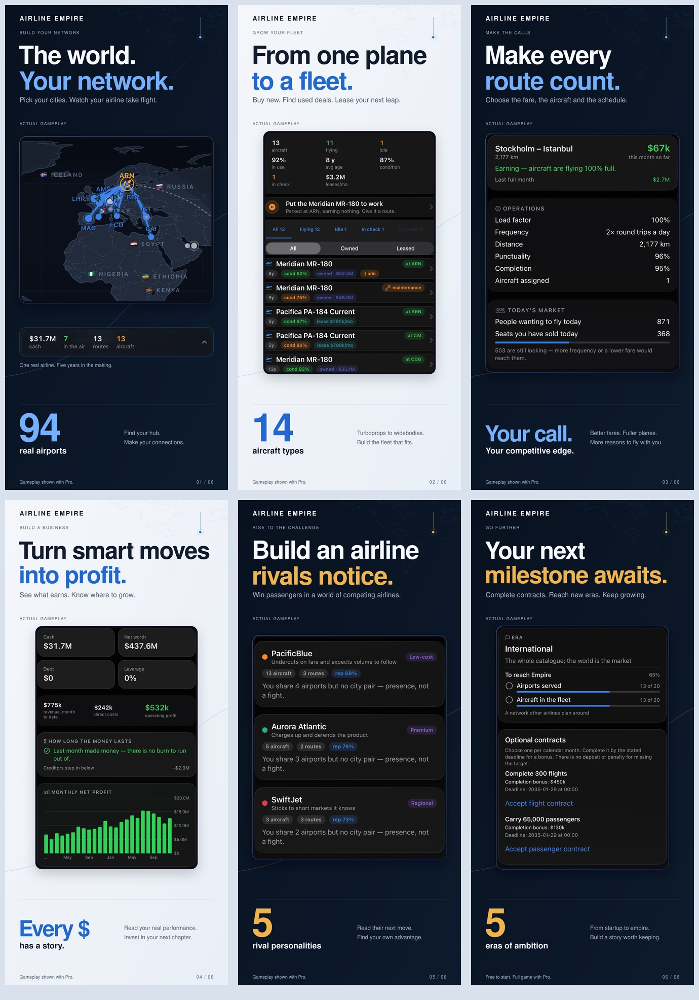

AIRLINE EMPIRE · PRESS
A small airline.
A world of possibilities.
An offline airline management game for iPhone and iPad, built around the satisfaction of making a plan work.
The story
Airline Empire turns a first aircraft and route into a business the player understands. Build across 94 real airports, manage 14 fictional aircraft types and progress through five eras. Route breakdowns and a full ledger explain the outcome of your decisions, while AI competitors and changing world conditions keep the next choice interesting.
The campaign plays offline. There are no ads, energy meters or paid shortcuts. The free game includes one campaign, 20 nearby airports and two eras; optional Pro expands the world and campaign options.
Facts
- Developer
- Isac Molin
- Platforms
- iPhone and iPad
- Genre
- Single-player airline management / simulation / strategy
- Business model
- Free to start. Optional Pro Weekly, Pro Yearly or Pro Lifetime.
- Availability
- Preparing for App Store launch. Release timing will be confirmed on the App Store.
Artwork and screenshots
Native gameplay presented in six benefit-led designs. The download includes iPhone and iPad exports and their dimensions.
Download press screenshots{kind=link}
{kind=link}

Contact
For editorial enquiries or game support: isacmolin@gmail.com.